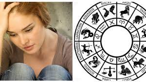

tu talón de Aquiles es justo algo que pensabas que era lo que te hacia ser mejor. Tu empatía es tu mayor debilidad.
Pensarás que no es nada malo y que te hace ser mejor persona. Pero, Libra, en ocasiones ser demasiado empático te puede hacer daño.
SUS PUNTOS DEBILES
Bondad
Generosidad
Honestidad
Los Libra nacidos entre el 24 de septiembre y el 23 de octubre suelen definirse como idealistas, sociales y diplomáticos.
Son personas calmadas, afables, equilibradas y que intentan mantenerse neutrales cuando se presentan conflictos.
Sin embargo, los Libra, también odian que se les contradiga, aunque en ocasiones no son capaces de enfrentarse a los demás.
Libra es un signo cardinal y de aire, se encuentra además entre los signos más refinados del zodíaco; tiene elegancia, encanto,
diplomacia y buen gusto, ama la belleza, es muy curioso por naturaleza y odia los conflictos.
SUS PUNTOS NEGATIVOS
Sus puntos negativos a veces son la frivolidad y un carácter voluble.
PUNTOS DEBILES
PUNTOS NEGATIVOS

Diferencia de los demas
Libra es un signo cardinal y de aire, se encuentra además entre los signos más refinados del zodíaco;
tiene elegancia, encanto, diplomacia y buen gusto, ama la belleza, es muy curioso por naturaleza y odia los conflictos.
Sus puntos negativos a veces son la frivolidad y un carácter voluble.